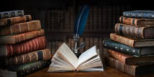

Para quem hoje se vislumbra com a praticidade oferecida pelos e-books, nem chega a imaginar o longo caminho percorrido pelos livros na História. Companheiro da escrita, os livros tiveram grande importância para a realização de registros históricos, a compilação de leis e a divulgação de ideias. Atualmente, a produção de livros chegou a tal ponto que, por exemplo, o século XX foi responsável por uma literatura histórica superior a de todos os outros séculos somados juntos!
No Egito Antigo, o ancestral dos livros foi concebido através do papiro. Transformada em atividade importante, a escrita no papiro era exclusivamente executada por uma classe de escribas
responsáveis pela leitura e fabricação dos textos oficiais e religiosos. Pesquisadores apontam que as peças de papiro mais antigas já encontradas foram concebidas há três mil anos antes de Cristo. Para se organizar esses documentos, as folhas de papiro eram pregadas umas às outras formando um único rolo. Por volta do século X a. C., a organização dos documentos escritos ganharam maior funcionalidade com a invenção dos pergaminhos. Apesar de não terem a mesma praticidade dos encadernados, essa base material foi de suma importância para a preservação de importantes textos da Antiguidade, como a Bíblia Sagrada e os escritos de alguns pensadores do mundo clássico. Vale a pena frisar que a qualidade e a resistência dos pergaminhos era superior à do papiro.
concepção do livro encadernado já era tentada nessa época. Para tanto, pegavam os pergaminhos disponíveis e realizava-se a organização de cada uma das supostas páginas. Conhecidos como codex (códice, em português) essas primeiras edições facilitaram a locomoção e manuseio dos textos escritos. Já nos fins da Antiguidade, por volta de 404, São Jerônimo registrou uma extensa teoria sobre as formas pelas quais seria possível produzir um livro.
No período medieval, o acesso ao mundo letrado ficou praticamente restrito aos clérigos. Boa parte dos livros ficava enclausurada sob a proteção dos mosteiros e tinham sua sabedoria conservada pelo demorado trabalho de monges copistas. Nesse aspecto, é importante ressaltar que a Igreja teve um papel fundamental para que vários textos da cultura grega e romana fossem conservados. Em tal época, era comum que as chamadas iluminuras decorassem o rodapé e os parágrafos dos livros com belas imagens.
Em 1454, o processo de fabricação e divulgação dos livros sofreu um salto qualitativo gigantesco com a invenção da prensa. Desenvolvida por Johannes Gutenberg, essa máquina permitia que o processo de fabricação dos livros fosse dinamizado. Apesar da importância do feito, observamos que na Idade Moderna a leitura e a escrita ainda se conservavam atreladas aos privilégios desfrutados pelas elites. Ler e escrever eram prazeres ainda destinados aos nobres e burgueses enriquecidos.
O século XIX, como filho das inovações tecnológicas, marcou uma época de grandes produções. Vale frisar que o processo de liberalização dos Estados Nacionais teve grande influência na disseminação do ensino público e no consequente incremento do número de leitores. Com o barateamento dos custos de produção, a leitura passou a atingir grandes parcelas da população. A partir de então nasceram os famosos e ainda bastante procurados “best-sellers”
.Literatura é uma modalidade artística que tem como matéria-prima a palavra, usada na construção de histórias ou na expressão de emoções e ideias. O texto literário, diferentemente do texto não literário, possui caráter subjetivo e conotativo.
As obras literárias mais antigas são a Ilíada e a Odisseia, dois famosos poemas épicos do escritor grego Homero. Portanto, está na Antiguidade a origem da literatura como a conhecemos hoje, formada por textos escritos que apresentam estrutura e conteúdo literários.